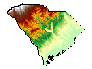
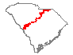
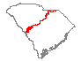
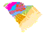
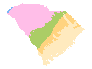

Search for digital data developed by the SCDNR Geological Survey.
These datasets were developed by the SCGS and are provided for general use. Users are encouraged to read the User Agreement.
Statewide General Geology Map Data layers can be downloaded via the SC DNR GIS Clearinghouse. Click on the download text to open the data page in a new window.
1:24,000 Scale Geologic Quadrangles can be downnloaded directly from this page. Descriptions of projects can be found here.
Use the drop-down below to browse by project, or search for a keyword by using the search bar.
| Area | Scale | Map Preview | Description | Project Name | Last Update | Download |
|---|---|---|---|---|---|---|
| Statewide | 1:24,000 |  | Statewide DEM for SC | Statewide General Geology | 2006 | Download |
| Statewide | 1:500,000 |  | Fall Line (large scale) | Statewide General Geology | 2005 | Download |
| Statewide | 1:1,000,000 |  | Fall Line (small scale) | Statewide General Geology | 2005 | Download |
| Statewide | 1:1,000,000 |  | General Geologic Map (geodatabase) | Statewide General Geology | 2014 | Download |
| Statewide | 1:1,000,000 |  | Geologic Provinces/Regions (geodatabase) | Statewide General Geology | 2014 | Download |
| Beaufort | 1:24,000 | ACE Basin | 2006 | Line Polygon |
||
| Bennetts Point | 1:24,000 | ACE Basin | 2006 | Line Polygon |
||
| Dale | 1:24,000 | ACE Basin | 2006 | Line Polygon |
||
| Edisto Beach | 1:24,000 | ACE Basin | 2006 | Line Polygon |
||
| Edisto Island | 1:24,000 | ACE Basin | 2006 | Line Polygon |
||
| Fripps Inlet | 1:24,000 | ACE Basin | 2006 | Line Polygon |
||
| Frogmore | 1:24,000 | ACE Basin | 2006 | Line Polygon |
||
| Parris Island | 1:24,000 | ACE Basin | 2006 | Line Polygon |
||
| Rockville | 1:24,000 | ACE Basin | 2006 | Line Polygon |
||
| St. Helena Sound | 1:24,000 | ACE Basin | 2006 | Line Polygon |
||
| St. Phillips Island | 1:24,000 | ACE Basin | 2006 | Line Polygon |
||
| Wiggins | 1:24,000 | ACE Basin | 2006 | Line Polygon |
||
| Bluffton | 1:24,000 | Bluffton Area | 2007 | Line Polygon |
||
| Fort Pulaski | 1:24,000 | Bluffton Area | 2007 | Line Polygon |
||
| Hardeville | 1:24,000 | Bluffton Area | 2007 | Line Polygon |
||
| Hilton Head | 1:24,000 | Bluffton Area | 2007 | Line Polygon |
||
| Jasper | 1:24,000 | Bluffton Area | 2007 | Line Polygon |
||
| Limehouse | 1:24,000 | Bluffton Area | 2007 | Line Polygon |
||
| Port Wentworth | 1:24,000 | Bluffton Area | 2007 | Line Polygon |
||
| Pritchardville | 1:24,000 | Bluffton Area | 2007 | Line Polygon |
||
| Rincon | 1:24,000 | Bluffton Area | 2007 | Line Polygon |
||
| Savannah | 1:24,000 | Bluffton Area | 2007 | Line Polygon |
||
| Spring Island | 1:24,000 | Bluffton Area | 2007 | Line Polygon |
||
| Tybee Island North | 1:24,000 | Bluffton Area | 2007 | Line Polygon |
||
| Aiken | 1:24,000 | Aiken | 2008 | Line Polygon |
||
| Aiken NW | 1:24,000 | Aiken | 2008 | Line Polygon |
||
| Augusta East | 1:24,000 | Aiken | 2008 | Line Polygon |
||
| Batesburg | 1:24,000 | Aiken | 2008 | Line Polygon |
||
| Foxtown | 1:24,000 | Aiken | 2008 | Line Polygon |
||
| Girard NW | 1:24,000 | Aiken | 2008 | Line Polygon |
||
| Graniteville | 1:24,000 | Aiken | 2008 | Line Polygon |
||
| Harleys Millpond | 1:24,000 | Aiken | 2008 | Line Polygon |
||
| Hollow Creek | 1:24,000 | Aiken | 2008 | Line Polygon |
||
| Jackson | 1:24,000 | Aiken | 2008 | Line Polygon |
||
| Mechanic Hill | 1:24,000 | Aiken | 2008 | Line Polygon |
||
| Monetta | 1:24,000 | Aiken | 2008 | Line Polygon |
||
| New Ellenton | 1:24,000 | Aiken | 2008 | Line Polygon |
||
| New Ellenton SE | 1:24,000 | Aiken | 2008 | Line Polygon |
||
| New Ellenton SW | 1:24,000 | Aiken | 2008 | Line Polygon |
||
| North Augusta | 1:24,000 | Aiken | 2008 | Line Polygon |
||
| Oakwwod | 1:24,000 | Aiken | 2008 | Line Polygon |
||
| Pond Branch | 1:24,000 | Aiken | 2008 | Line Polygon |
||
| Ridge Spring | 1:24,000 | Aiken | 2008 | Line Polygon |
||
| Shell Bluff Landing | 1:24,000 | Aiken | 2008 | Line Polygon |
||
| Steedman | 1:24,000 | Aiken | 2008 | Line Polygon |
||
| Trenton | 1:24,000 | Aiken | 2008 | Line Polygon |
||
| Williston | 1:24,000 | Aiken | 2008 | Line Polygon |
||
| Windsor | 1:24,000 | Aiken | 2008 | Line Polygon |
The purpose of the data set is intended to assist South Carolina Geological Survey personnel in maintaining geological information for the state of South Carolina. The digital geologic map database for the quadrangle has been created as a general-purpose data set that is applicable to land-related investigations. *please refer to metadata for more information
This data set is a digital version of geologic data developed by the SCGS. Coverage consists of geologic map units mapped by 7.5-Minute Quadrangle located in the ACE Basin area of South Carolina. This data was created from original field work and/or compiled from existing geologic map data. The coverage was constructed by digitizing maps, compiling information onto a planimetric correct base, or revising digitized maps using remotely sensed and other information. The ACE Basin shorelines were revised using 1999 DOQQ aerial photos to a scale of 1:10,000.
This data set is a digital version of geologic maps developed by SCGS. Coverage consists of geologic units mapped by 7.5-minute Quadrangle located in the Bluffton-Hilton Head areas of South Carolina. This data was created from original field work and/or compiled from existing geologic map data. The coverage was constructed by digitizing maps, compiling information onto a planimetric correct base, or revising digitized maps using remotely sensed and other information. The Bluffton Area shorelines were revised using 1999 DOQQ aerial photos to a scale of 1:10,000.
This data set is a digital version of geologic maps developed by SCGS. Coverage consists of geologic map areas mapped by 7.5-minute Quadrangle located in Aiken County, South Carolina. This data was created from original field work and/or compiled from existing geologic map data. The coverage was constructed by digitizing maps, compiling information onto a planimetric correct base, or revising digitized maps using remotely sensed and other information. Dataset also includes drill hole and observational data by request. Georgia portions of quadrangles are not mapped.
Download the Informal Attribute Key (A formal attribute key will be published when the remaining quadrangles are compiled.)
Currently Under Revision
Currently Under Revision
Currently Under Revision
Carefully read the following; by using these data, you indicate your acceptance of this User Agreement. This agreement applies to both Digital PDF Documents and GIS Data files.
The South Carolina Department of Natural Resources, Geological Survey (SCGS) provides these geographic data "as is" and makes no guarantee or warranty concerning the accuracy of information contained in the geographic data. SCGS further makes no warranties, either expressed or implied, as to any other matter whatsoever, including, without limitation, the condition of the product, or its fitness for any particular purpose. The burden for determining fitness for use lies entirely with the user. Although these data have been processed successfully on computers of SCGS, no warranty, expressed or implied, is made by SCGS regarding the use of these data on any other system, nor does the fact of distribution constitute or imply any such warranty.
In no event shall the SCGS have any liability whatsoever for payment of any consequential, incidental, indirect, special, or tort damages of any kind, including, but not limited to, any loss of profits arising out of use of or reliance on the geographic data or arising out of the delivery, installation, operation, or support by SCGS.
Any hardcopies utilizing SCGS datasets shall clearly indicate their source. If the user has modified the data in any way, they are obligated to describe the types of modifications they have performed on the hardcopy map. The user agrees not to misrepresent SCGS datasets, nor to imply that changes they made were approved by SCGS. A Suggested Citation can be found in the (Other_Citation_Details) section of the metadata.
Reproduction and Printing of Map Publications for In-House use is permitted when accompanied by this User Agreement. Reproduction and Printing of Map Publications for the purpose of Resale is Forbidden. Please refer any request for copies to the S.C. Geological Survey.
Agreement update: 03/17/2010
{kind=link}
{kind=link}
{kind=link}